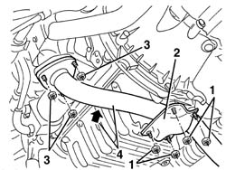
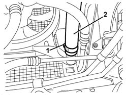
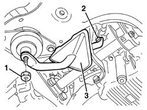
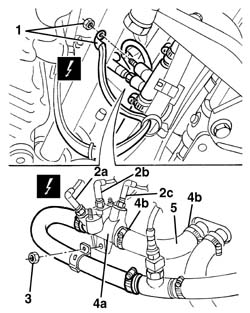

5020L28 pipe from boiler to heater - r r
- Path
- Procedures > 50 AUXILIARY UNITS > 5020 HEATER > 5020L additional heater > 5020L28 pipe from boiler to heater - r r
- Kind
- repair procedure (removal / refitting; the operation number is the code)
- Applies to
- engines: 1.9 JTD 8v , 2.4 JTD 10v; all production periods
- Interactive page
- https://sloeber94.github.io/elrnDB-a156/en/#/3238300
Applies to: engines: 1.9 JTD 8v , 2.4 JTD 10v; all production periods
 Removing
Removing
 Refitting
Refitting7055B54 under-engine guard - r r
1. Working underneath the engine compartment, undo the bolts fixing the bracket.
2. Remove the bracket.
3. Undo the nuts fixing the flange.
4. Move the exhaust pipe to the side and fix it temporarily.

Applies to: engines: 1.9 JTD 8v , 2.4 JTD 10v; all production periods
Place a suitable container for collecting the coolant under the right side of the radiator.
1. Loosen the band securing the right radiator pipe.
2. Disconnect the right radiator pipe and drain the coolant.

Applies to: engines: 1.9 JTD 8v , 2.4 JTD 10v; all production periods
1. Undo the nut.
2. Unscrew the bolt.
3. Recover the flexible engine mounting.

Applies to: engines: 1.9 JTD 8v , 2.4 JTD 10v; all production periods
1. Disconnect the front earth loom for the heater.
 | Name | Connector |
|---|---|---|
1 | Earth cable loom for additional heater |
2. Disconnect the electrical connections (2a, 2b, 2c) for the spark plugs (press fit).
| Name | Connector |
|---|---|---|
2a | Additional heater resistance |
| Name | Connector |
|---|---|---|
2b | Additional heater resistance |
| Name | Connector |
|---|---|---|
2c | Additional heater resistance |
3. Undo the nut.
4. Move the heater (4a) slightly and loosen the bands (4b).
5. Remove the pipe.

Applies to: engines: 1.9 JTD 8v , 2.4 JTD 10v; all production periods
Refitting
RemovingCheck that the heater pipe is not damaged.
Connect the pipe and secure it using the bands.
Position the heater and tighten the nut.
Connect the electrical connections to the spark plugs (press fit).
Connect the front earth loom.
Position the flexible engine mounting, then secure it using the nut and the bolt.
Connect the right radiator pipe and secure it using the band.
Position the exhaust pipe and tighten the nuts fixing the flange.
Position the bracket and fix it using the bolts.
Refill the engine cooling circuit using the recommended fluid.
 | Type | Component | Name | Qty. |
|---|---|---|---|---|
- | Fluid | ENGINE COOLING CIRCUIT | Alfa Romeo Climafluid Super Permanent - 40 °C | - |
Visually inspect that there are no leaks from the cooling circuit.
7055B54 under-engine guard - r r
Check that the additional heating system is working properly.